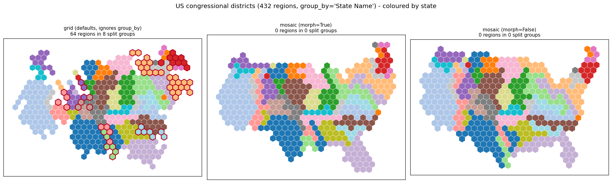
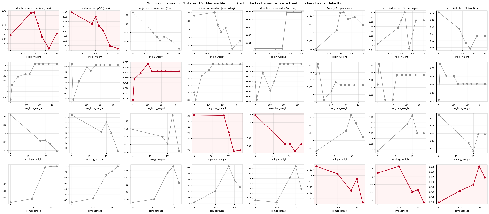
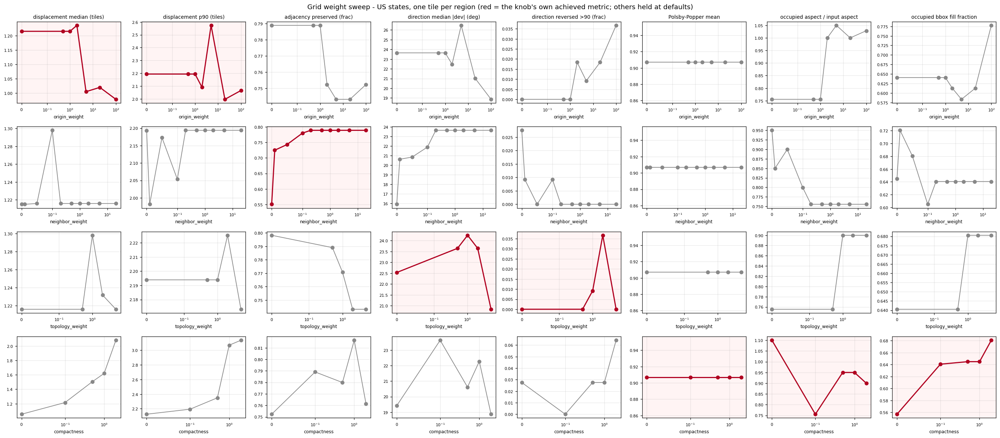
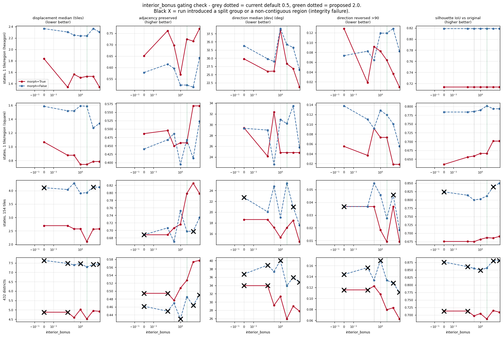
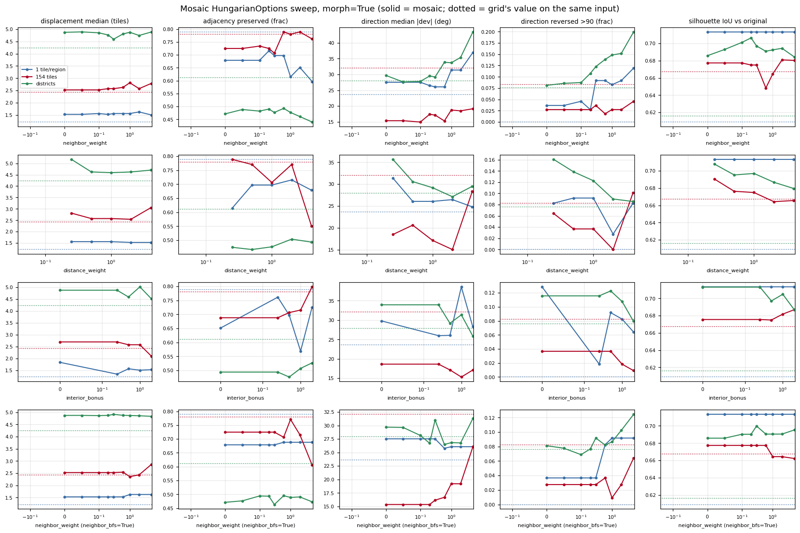
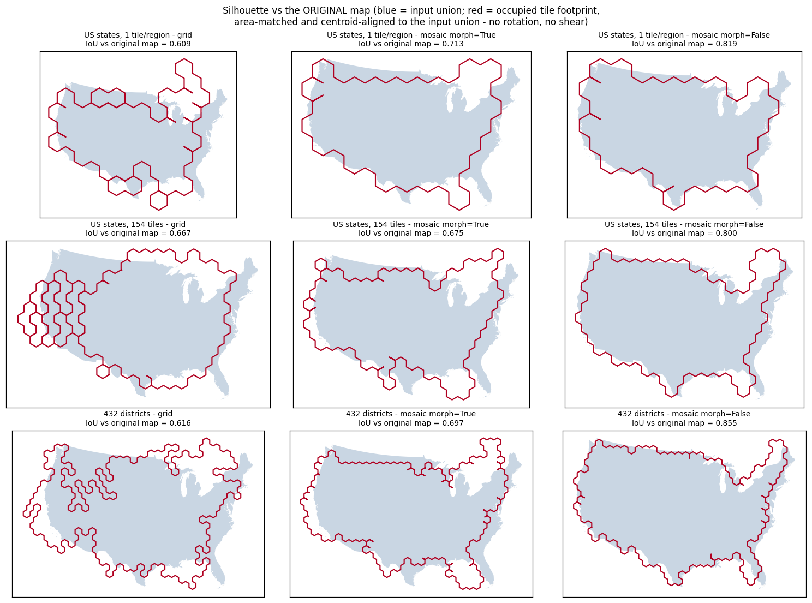
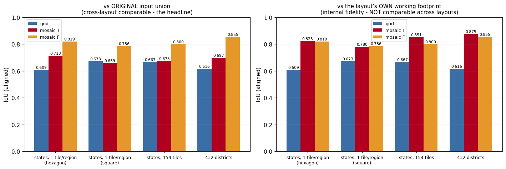
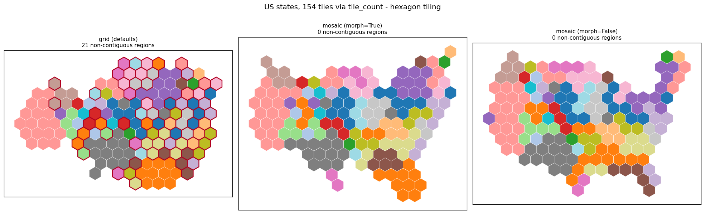
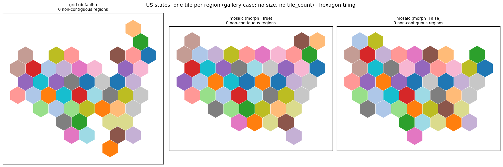
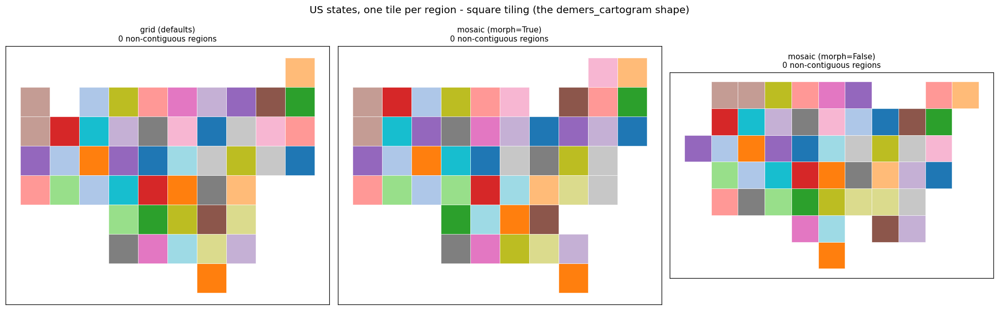

Both layouts measured with one external metric module on three inputs, primary case one tile per region (the gallery/preset case), plus an area-based silhouette metric and sweeps of both grid's four cost weights and mosaic's HungarianOptions. Measurement only, no recommendation.
pr: and url: are intentionally absent — this is not a PR review page. The index builder prints a "missing required metadata key" warning for each and still builds the page.
A measurement harness, not a decision. Every number below is computed externally from LayoutResult + the input GeoDataFrame by one module (metrics.py), so grid and mosaic are scored by identical code. Neither layout's own AlgorithmMetrics.algorithm payload (GridMetrics, MosaicMetrics) is read by the metrics.
Files:
metrics.py — the metric module (layout-agnostic).run.py — runner; appends one JSON object per run to results.jsonlas each run finishes. --only uniform|comparison|sweep|sweep_uniform|mosaic_sweep|placements.
figures.py — the comparison and grid-sweep PNGs.silhouette_backfill.py — recomputes the silhouette (both references) andthe morphed-centroid displacement for the comparison runs from placements/*.pkl, without re-running any layout. Merged into results.jsonl.
figures_round2.py — the silhouette and mosaic-sweep figures.interior_bonus_check.py / figures_ibcheck.py — the section 6 gatinggrid and its figure.
results.jsonl — raw results, 238 runs: 12 comparison runs, 54 grid weightsweep runs, 8 extra mosaic repeats, 90 mosaic knob sweep runs at morph=True 18 mosaic morph=False probes, and 56 interior_bonus gating-check runs. One JSON object per line, keyed by name.
placements/*.pkl — assigned tile polygons + lattice adjacency for figures.Re-run:
`` PYTHONPATH=<checkout of origin/main>/src uv run python visual_checks/grid-vs-mosaic-similarity/run.py PYTHONPATH=<checkout of origin/main>/src uv run python visual_checks/grid-vs-mosaic-similarity/figures.py PYTHONPATH=<checkout of origin/main>/src uv run python visual_checks/grid-vs-mosaic-similarity/figures_round2.py PYTHONPATH=<checkout of origin/main>/src uv run python visual_checks/grid-vs-mosaic-similarity/interior_bonus_check.py PYTHONPATH=<checkout of origin/main>/src uv run python visual_checks/grid-vs-mosaic-similarity/figures_ibcheck.py ``
Both layouts carry a TilingResult and an assignments array but index it differently (GridLayoutResult.assignments[i] = tile for *item* i; MosaicLayoutResult.assignments[j] = the j-th *assigned tile*). Both reduce to a list of (tile index, region index) pairs; that is all the metrics read. "Block centroid" of a region = mean of the centres of its assigned tiles. "Tile adjacency" is always TilingResult.adjacency (edge adjacency), never a geometric touch test.
| Axis | Grid weight it corresponds to | Definition |
|---|---|---|
| Displacement | origin_weight | Distance from each region's original centroid to its block centroid. Median / p90, raw and in tile-size units. |
| Adjacency preservation | neighbor_weight | Over the input region-adjacency pairs (compute_adjacency, BINARY): fraction where some tile of A is lattice-edge-adjacent to some tile of B. For the rest, min BFS hop distance between the two tile sets over the whole lattice (empty tiles traversable). |
| Direction preservation | topology_weight | For each input adjacent pair, signed angle between the original centroid-to-centroid vector and the block-centroid-to-block-centroid vector. Median absolute deviation, p90, fraction > 90 degrees. |
| Spread | compactness | Occupied-lattice bbox width/height in tile units, its aspect ratio divided by the input bbox aspect, bbox fill fraction; plus **combinatorial** Polsby-Popper per region on the tile adjacency graph: P_edges = sum over tiles (sides - same-region neighbours), PP = 4*pi*(n_tiles*A_tile)/(P_edges*L_edge)^2. No polygon unioning anywhere. |
| Integrity | — | Regions receiving exactly their requested tile count; non-contiguous regions (tile set not one block); split groups (raw, and adjusted for input components a group unavoidably straddles); unassigned core tiles; enclosed unassigned tiles (unassigned cell with every lattice neighbour assigned). |
Core tiles are computed uniformly: a lattice tile whose intersection with the union of the **original** input geometries is at least 10 % of its area. See caveats.
---
states_uniform)load_us_census(population=True) with no size, no tile_count, no group_by. 49 states, 49 tiles. This is docs/examples/plot_symbol_cartogram.py and exactly what tile_map_cartogram (hexagon) and demers_cartogram (square) produce — both presets call GridBasedLayout with uniform symbol size.
At one tile per region a region's "block" is a single tile, so several metrics collapse to constants. Do **not** read a constant column as agreement between the layouts.
| Axis | Informative at 1:1? |
|---|---|
| Displacement (median, p90) | **yes** |
| Adjacency preservation (fraction kept) | **yes** |
| Direction preservation (median deviation, fraction reversed) | **yes** |
| Spread — occupied bbox in tiles, aspect vs input, fill fraction | **yes** |
| Wall clock | **yes** |
| Combinatorial Polsby-Popper | **no** — a single tile always scores the same: 0.907 for a hexagon, 0.785 for a square. Constant across every run in this section. |
| Non-contiguous regions | **no** — trivially 0 for every run; a one-tile set is always connected. |
| Regions receiving their requested tile count | **no** — 49/49 everywhere; every solver hands out exactly one tile per region by construction. |
| Enclosed unassigned tiles | **weakly** — 0 in every run here, so it separates nothing on this input. |
| Unassigned core tiles | **not comparable** — see caveats. |
At one tile per region, mosaic's calibration has nothing to size against beyond "49 core tiles", its slot-expanded Hungarian degenerates to an ordinary 49-region assignment, its connectivity repair has no multi-tile block that could break, and its ring swap-back has no ring to swap back. This case therefore measures **mosaic's assignment core (optionally preceded by a flow morph) against grid's tuned four-term cost function, with mosaic's repair machinery idle**. It is not a test of the machinery that mosaic was built for.
Fidelity — distances in tile-size units; raw metres in results.jsonl.
| run | s | tile size | lattice | assigned | disp med | disp p90 | adj kept | broken pairs | dir med deg | dir p90 deg | dir >90 | aspect/input | bbox fill | bbox w x h (tiles) |
|---|---|---|---|---|---|---|---|---|---|---|---|---|---|---|
| grid | 1.5 | 247588 | 149 | 49 | **1.22** | **2.19** | **0.789** | 23/109 | **23.6** | 58.4 | **0.000** | 0.76 | 0.641 | 14.7 x 13.5 |
| mosaic morph=True | 1.3 | 285095 | 182 | 49 | 1.56 | 2.38 | 0.697 | 33/109 | 26.1 | 86.5 | 0.092 | 0.97 | 0.824 | 14.7 x 10.5 |
| mosaic morph=False | 0.7 | 286410 | 168 | 49 | 2.25 | 4.32 | 0.596 | 44/109 | 29.0 | 80.1 | 0.064 | 0.97 | 0.824 | 14.7 x 10.5 |
Constant / non-separating on this input: Polsby-Popper 0.907 for all three; non-contiguous regions 0 for all three; exact tile count 49/49 for all three; enclosed unassigned tiles 0 for all three. Unassigned core tiles were 19/63 (grid), 5/48 (mosaic morph=True), 0/49 (mosaic morph=False) — but see the caveat; grid's number reflects its deliberately oversized lattice.
Grid leads on every informative fidelity axis. The largest gaps are adjacency preservation (0.789 vs 0.697 vs 0.596) and reversed direction pairs (grid reverses **none** of the 109 input adjacencies by more than 90 degrees; mosaic morph=True reverses 9.2 %). Displacement median is 1.22 vs 1.56 vs 2.25 tiles.
The spread numbers go the other way and should be read carefully: grid's occupied footprint is taller and looser (14.7 x 13.5 tiles, fill 0.641, aspect 0.76 of the input aspect) while mosaic's is squatter and denser (14.7 x 10.5, fill 0.824, aspect 0.97). In the figure this is visible as grid keeping the Florida and Maine spurs and the empty interior west, and mosaic packing into a denser blob. Whether "keeps the silhouette" or "packs tightly" is better is a design call, not something this measures.
demers_cartogram shape)Mosaic **does** accept tiling="square" — no workaround needed.
| run | s | tile size | lattice | assigned | disp med | disp p90 | adj kept | broken pairs | dir med deg | dir p90 deg | dir >90 | aspect/input | bbox fill |
|---|---|---|---|---|---|---|---|---|---|---|---|---|---|
| grid | 1.6 | 399076 | 150 | 49 | **0.76** | **1.27** | **0.606** | 43/109 | **18.1** | 57.7 | 0.028 | 0.89 | 0.778 |
| mosaic morph=True | 0.8 | 437809 | 208 | 49 | 0.88 | 1.70 | 0.450 | 60/109 | 32.3 | 86.5 | 0.092 | 0.89 | 0.778 |
| mosaic morph=False | 0.8 | 456359 | 192 | 49 | 1.52 | 2.17 | 0.486 | 56/109 | 22.6 | 84.4 | 0.092 | 1.15 | 0.817 |
Polsby-Popper is the single-square constant 0.785 for all three; the other degenerate columns behave as in the hexagon table.
The adjacency gap is wider on squares than on hexagons (0.606 vs 0.450, a 26 % relative drop, against 0.789 vs 0.697 = 12 % on hexagons). A square lattice offers 4 edge-neighbours instead of 6, so there is less room to place a region beside all of its geographic neighbours, and the two solvers diverge more.
states_uniform, hexagon)Each knob varied with the other three at their defaults (origin_weight=0.5, neighbor_weight=0.5, topology_weight=0.5, compactness=0.1). Bold = the knob's own achieved metric. Polsby-Popper is omitted from these tables: it is the constant 0.907 in all 27 runs.
origin_weight -> displacement| value | **disp med** | **disp p90** | adj kept | dir med deg | dir >90 | aspect/input | bbox fill |
|---|---|---|---|---|---|---|---|
| 0 | 1.22 | 2.19 | 0.789 | 23.6 | 0.000 | 0.76 | 0.641 |
| 0.5 (default) | 1.22 | 2.19 | 0.789 | 23.6 | 0.000 | 0.76 | 0.641 |
| 1 | 1.22 | 2.19 | 0.789 | 23.6 | 0.000 | 0.76 | 0.641 |
| 2 | 1.24 | 2.09 | 0.752 | 22.5 | 0.018 | 1.00 | 0.612 |
| 5 | 1.00 | 2.57 | 0.743 | 26.5 | 0.009 | 1.05 | 0.583 |
| 20 | 1.02 | 2.00 | 0.743 | 21.0 | 0.018 | 1.00 | 0.612 |
| 100 | 0.98 | 2.07 | 0.752 | 18.9 | 0.037 | 1.03 | 0.778 |
**0, 0.5 and 1 produce the identical assignment** — every metric matches to the last digit. The default therefore does exactly what 0 does on this input. Real movement starts at 2 and the total range of the median is 0.98-1.24 tiles. Note assign_to_grid_hungarian bootstraps its first linear_sum_assignment with init_origin_w = max(origin_weight, 1.0) and then runs up to 10 refinement passes, so the origin_weight=0 run still starts from a purely origin-driven assignment; its 1.22 should be read as "origin attraction removed from refinement only".
neighbor_weight -> adjacency preservation| value | disp med | disp p90 | **adj kept** | dir med deg | dir >90 | aspect/input | bbox fill |
|---|---|---|---|---|---|---|---|
| 0 | 1.21 | 2.19 | 0.550 | 15.9 | 0.028 | 0.95 | 0.645 |
| 0.01 | 1.21 | 1.98 | 0.725 | 20.6 | 0.009 | 0.85 | 0.721 |
| 0.05 | 1.22 | 2.17 | 0.743 | 20.8 | 0.000 | 0.90 | 0.681 |
| 0.1 | 1.30 | 2.05 | 0.780 | 21.9 | 0.009 | 0.80 | 0.605 |
| 0.2 | 1.22 | 2.19 | 0.789 | 23.6 | 0.000 | 0.76 | 0.641 |
| 0.5 (default) | 1.22 | 2.19 | 0.789 | 23.6 | 0.000 | 0.76 | 0.641 |
| 1 | 1.22 | 2.19 | 0.789 | 23.6 | 0.000 | 0.76 | 0.641 |
| 2 | 1.22 | 2.19 | 0.789 | 23.6 | 0.000 | 0.76 | 0.641 |
| 5 | 1.22 | 2.19 | 0.789 | 23.6 | 0.000 | 0.76 | 0.641 |
| 20 | 1.22 | 2.19 | 0.789 | 23.6 | 0.000 | 0.76 | 0.641 |
The saturation seen on the 154-tile case appears here too, at a **different threshold**: everything from 0.2 upward is one identical assignment. So the 0.5 default sits inside a plateau at 1:1 as well — but at 1:1 the plateau is also the maximum achieved (0.789), whereas on the 154-tile case the peak (0.817) was at 0.1, *below* the plateau. The saturation point is therefore input-dependent (>=0.2 here, >=0.5 at 154 tiles) and whether the default lands on the best value is luck, not tuning that holds across inputs. This is the biggest single-knob effect in either sweep: 0.550 -> 0.789.
topology_weight -> direction preservation| value | disp med | disp p90 | adj kept | **dir med deg** | **dir >90** | aspect/input | bbox fill |
|---|---|---|---|---|---|---|---|
| 0 | 1.22 | 2.19 | 0.798 | 22.5 | 0.000 | 0.76 | 0.641 |
| 0.5 (default) | 1.22 | 2.19 | 0.789 | 23.6 | 0.000 | 0.76 | 0.641 |
| 1 | 1.30 | 2.19 | 0.771 | 24.2 | 0.009 | 0.90 | 0.681 |
| 2 | 1.23 | 2.23 | 0.743 | 23.6 | 0.037 | 0.90 | 0.681 |
| 5 | 1.22 | 2.17 | 0.743 | 20.8 | 0.000 | 0.90 | 0.681 |
**Non-monotonic and inverted over most of its range**: raising topology_weight from 0 to 2 makes the median angular deviation *worse* (22.5 -> 24.2 degrees) and the reversal fraction worse (0.000 -> 0.037), before both recover at 5. On this input the knob does not deliver monotone control of the axis it is named for. It does cost adjacency preservation monotonically (0.798 -> 0.743).
compactness -> spread| value | disp med | disp p90 | adj kept | dir med deg | **aspect/input** | **bbox fill** |
|---|---|---|---|---|---|---|
| 0 | 1.05 | 2.13 | 0.752 | 19.4 | 1.10 | 0.557 |
| 0.1 (default) | 1.22 | 2.19 | 0.789 | 23.6 | 0.76 | 0.641 |
| 0.5 | 1.50 | 2.35 | 0.780 | 20.6 | 0.95 | 0.645 |
| 1 | 1.62 | 3.07 | 0.817 | 22.3 | 0.95 | 0.645 |
| 2 | 2.08 | 3.14 | 0.761 | 18.9 | 0.90 | 0.681 |
Monotone and substantial on displacement (1.05 -> 2.08 tiles, i.e. the knob costs what it is supposed to cost), and monotone on bbox fill (0.557 -> 0.681). But its headline spread metric, aspect ratio, is **non-monotonic and the default is the extreme**: 1.10 at 0, then 0.76 at the 0.1 default, then back up to 0.95/0.95/0.90. The default squeezes the footprint harder than compactness=2 does. I do not have an explanation for that and did not investigate it.
27 sweep runs produce only 16 distinct outcomes. Eleven separate configurations — origin_weight in {0, 0.5, 1}, neighbor_weight in {0.2, 0.5, 1, 2, 5, 20}, topology_weight=0.5, compactness=0.1 — all land on one and the same assignment. At 1:1 the default configuration is a large attractor: three of the four knobs have to be pushed off their defaults before anything changes at all.
---
tile_count (states)Same 49 states, tiles = max(1, round(Population/sum * 150)), hexagon.
| run | s | tile size | lattice | assigned | disp med | disp p90 | adj kept | dir med deg | dir p90 deg | dir >90 | PP mean | aspect/input |
|---|---|---|---|---|---|---|---|---|---|---|---|---|
| grid | 4.6 | 139658 | 437 | 154 | 2.43 | 4.63 | 0.780 | 32.1 | 85.3 | 0.083 | 0.606 | 1.13 |
| mosaic morph=True | 2.8 | 152407 | 494 | 154 | 2.58 | 4.01 | 0.706 | 17.1 | 60.1 | 0.037 | 0.695 | 0.94 |
| mosaic morph=False | 1.0 | 151407 | 470 | 154 | 4.28 | 6.32 | 0.670 | 24.8 | 64.3 | 0.055 | 0.686 | 1.02 |
| run | exact tile count | non-contiguous | unassigned core / core | enclosed |
|---|---|---|---|---|
| grid | 49/49 | **21** | 51 / 182 | 0 |
| mosaic morph=True | 49/49 | **0** | 18 / 153 | 0 |
| mosaic morph=False | 49/49 | **0** | 3 / 153 | 0 |
With more than one tile per region, Polsby-Popper and non-contiguity become informative — and they separate the layouts sharply. Grid leaves 21 of 49 states as disconnected tile blocks (with its defaults fill_holes=True, fix_islands=True); mosaic leaves none. Direction preservation also flips relative to the 1:1 case: here mosaic morph=True is clearly better (17.1 vs 32.1 degrees) where at 1:1 grid was better. The multi-tile case is where mosaic's repair machinery is actually doing work.
Same protocol. Full per-value tables are in results.jsonl and grid_weight_sweep_states154.png; the summary of each knob's own axis:
| knob | its own metric, range over the sweep | note |
|---|---|---|
origin_weight (0 -> 100) | disp median 2.43 -> 2.05 -> 2.21, non-monotonic; p90 5.22 -> 3.34 monotone | tail control only |
neighbor_weight (0 -> 20) | adj kept 0.642 -> **0.817 at 0.1** -> 0.780 frozen from 0.5 up | peak below the default; saturates >=0.5 |
topology_weight (0 -> 5) | dir median 32.1 -> 25.8, no change between 0 and the 0.5 default | shallow, monotone here (unlike at 1:1) |
compactness (0 -> 2) | aspect/input 1.13 -> 0.67 monotone; PP mean 0.613 -> 0.582 | the one knob with clear authority on this input |
27 runs, 18 distinct outcomes. origin_weight=1 ties topology_weight=1, and origin_weight=5 ties compactness=0.
---
group_by="State Name"| run | s | tile size | lattice | assigned | disp med | disp p90 | adj kept | dir med deg | dir p90 deg | dir >90 | aspect/input |
|---|---|---|---|---|---|---|---|---|---|---|---|
| grid | **108.2** | 83384 | 1125 | 432 | 4.23 | 6.53 | 0.612 | 27.9 | 78.6 | 0.076 | 1.02 |
| mosaic morph=True | 3.9 | 88353 | 1248 | 432 | 4.59 | 8.95 | 0.477 | 29.2 | 97.8 | 0.123 | 0.97 |
| mosaic morph=False | 3.4 | 87619 | 1178 | 432 | 7.40 | 11.97 | 0.470 | 37.4 | 104.7 | 0.133 | 1.04 |
| run | exact tile count | non-contiguous | split groups raw | split adj. | unassigned core / core | enclosed |
|---|---|---|---|---|---|---|
| grid | 432/432 | 0 | **8** | **8** | 116 / 480 | 0 |
| mosaic morph=True | 432/432 | 0 | **0** | **0** | 51 / 431 | 0 |
| mosaic morph=False | 432/432 | 0 | **0** | **0** | 13 / 442 | 0 |
This input is also 1:1 (one tile per district), so Polsby-Popper is the constant 0.907 and non-contiguity is trivially 0 here too.
group_by asymmetry (verified in code)prepare_layout_data sets source_indices **only** inside the if tile_count is not None: branch (layouts/data_prep.py, the # 5. tile_count expansion block). With group_by the user grouping lands in group_ids / group_ids_G and source_indices stays None.
GridBasedLayout.compute branches on if data.source_indices is not None:. With group_by it therefore takes the else branch — the plain N-level Hungarian over all 432 districts — and the only place group_ids appears in layouts/grid/__init__.py is group_ids=data.group_ids when constructing the result. Grid never reads group_ids_G and makes no attempt to keep a state's districts together. MosaicLayout.compute reads data.group_ids_G and passes it to its group constraint and to _count_split_units.
So grid's 8 split groups are **not a defect of grid**: they measure a feature grid does not have. The fidelity numbers are still comparable between the two, but mosaic is solving a strictly harder problem on this input, which is relevant when reading its lower adjacency-preservation figure.
---
---
The spread metrics in sections 1-3 (bounding box, aspect, fill) cannot see a ragged outline or a scattered outlier, and on the districts case they lean slightly the wrong way (grid aspect/input 1.02 vs mosaic 0.97, fill 0.590 vs 0.621). The user's reading of districts_grid_vs_mosaic.png was that grid's tilegram is less constrained and resembles the US less. That is silhouette fidelity, and it was a genuine blind spot in the metric set.
Area-based only. No perimeter measure is taken on the unioned footprint: unioning tiles leaves hairline internal edges whose perimeter is not reproducible, and any Polsby-Popper-style measure would square that noise.
Let A be the union of the occupied tile polygons and B a reference footprint. Reported raw (no transform):
area_ratio_raw = area(A) / area(B)frac_input_covered_raw = area(A n B) / area(B)frac_footprint_on_input_raw = area(A n B) / area(A)frac_tile_centres_inside = fraction of occupied tile centres inside B**The alignment, and why it is fair.** The raw numbers conflate shape with the fact that the two layouts choose different tile sizes, so one tilegram can cover 33 % more ground than the other before any shape question is asked. The aligned numbers remove exactly that confound and nothing else: A is scaled about its own centroid by sqrt(area(B)/area(A)) so the two areas are equal, then translated so the two centroids coincide. **Uniform scale and translation only — no rotation, no shear, no per-part fitting.** A footprint that is the wrong shape cannot be transformed into the right one by this, and the transform is chosen without reference to either layout, so it cannot favour one. What is left is silhouette fidelity:
iou_aligned = area(A' n B) / area(A' u B)symdiff_norm_aligned = area(A' symdiff B) / area(B)frac_input_covered_aligned = area(A' n B) / area(B)Mosaic with morph=True builds working_union from the **morphed** geometries (mosaic/__init__.py step 1) and tiles against that. The morphed footprint is the layout's own target, not the US outline. So every run is measured against both:
key in results.jsonl | reference | use |
|---|---|---|
silhouette_vs_original | the **ORIGINAL** input union, for every run including mosaic morph=True | **the cross-layout headline.** Grid has no morph and never sees anything else, so this is the only common reference; it is also the one that matches the visual criterion "does it still look like the US". |
silhouette_vs_working | the footprint the layout actually tiled against — the morphed union for mosaic morph=True, the original union otherwise | internal fidelity: "did the layout cover what it was asked to cover". **NOT comparable across layouts** — the runs aim at different shapes. Used below only to explain differences, never to rank layouts. |
silhouette_working_is_original: true marks the runs where the two are the same object (grid, and mosaic morph=False).
The morphed reference is not stored on the result, so run.py reproduces it by re-running morph_geometries with the same arguments the layout uses (MorphOptions(n_iter=100, show_progress=False), values = counts). The reproduction is exact: the backfilled IoU for states_uniform__mosaic_morph__rep0 matches the inline one to three decimals.
| input | grid | mosaic morph=True | mosaic morph=False |
|---|---|---|---|
| states_uniform (hexagon) | 0.609 | **0.713** | **0.819** |
| states_uniform (square) | **0.673** | 0.659 | **0.786** |
| states, 154 tiles | 0.667 | 0.675 | **0.800** |
| districts | 0.616 | **0.697** | **0.855** |
**The silhouette metric corroborates the visual reading.** On districts — the figure the user looked at — grid scores 0.616 against mosaic's 0.697, and silhouette_footprints.png shows why: grid's outline has scattered protrusions and interior bays, mosaic's follows the coast. The bounding-box metrics missed this entirely and pointed the other way.
Mosaic leads on three of the four groups. The square case is the exception (grid 0.673 vs mosaic 0.659), consistent with the square lattice being harder for mosaic generally.
Grid's tile-size rule makes area_ratio_raw exactly 1.000 in every grid run: its total symbol area matches the total input area by construction. Mosaic's is 1.10-1.34, so mosaic covers more ground than the map. That is why the raw and aligned numbers disagree in direction: on states_uniform, frac_footprint_on_input_raw is 0.759 for grid against 0.718 for mosaic (grid's footprint is the right size but the wrong shape), while aligned IoU is 0.609 against 0.713 (mosaic's is the right shape but too big). Both are reported; neither is the whole story on its own.
| run | IoU vs ORIGINAL | IoU vs its OWN working footprint |
|---|---|---|
| states_uniform mosaic morph=True | 0.713 | **0.823** |
| states, 154 tiles mosaic morph=True | 0.675 | **0.851** |
| districts mosaic morph=True | 0.697 | **0.875** |
| every grid run, every mosaic morph=False run | (same object) | (same object) |
Read this as: **mosaic covers its own target faithfully, and the target is what departs from the map.** With no size column the morph targets roughly equal area per region, so Texas shrinks and Rhode Island grows and the morphed footprint is materially different from the US outline. Mosaic morph=True is not failing to hit what it aims at; it is aiming somewhere else. This is also why mosaic morph=False has the best silhouette of any run in the table while having the worst displacement — the two pull against each other.
The headline displacement stays measured from the **original** centroids for every run, as before. For morph=True runs a secondary number measured from the **morphed** centroids separates "the assignment moved the region" from "the morph moved the region":
| run | disp median vs ORIGINAL centroids | vs MORPHED centroids |
|---|---|---|
| states_uniform mosaic morph=True | 1.56 | 1.10 |
| states, 154 tiles mosaic morph=True | 2.58 | 0.98 |
| districts mosaic morph=True | 4.59 | 2.10 |
The assignment itself moves regions much less than the headline suggests: at 1:1 the morphed-centroid median is 70 % of the original-centroid one, at 154 tiles 38 %, on districts 46 %. So roughly 30 %, 62 % and 54 % of mosaic's measured displacement on those inputs is the morph rather than the assignment. Grid has no morph, so its headline number is entirely assignment — which is part of why the headline comparison flatters grid on this axis.
IoU vs original across the grid weight sweeps:
| knob | states_uniform range | states (154 tiles) range |
|---|---|---|
origin_weight | 0.524 - 0.678 | 0.662 - 0.709 |
neighbor_weight | 0.561 - 0.691 | 0.596 - 0.718 |
topology_weight | 0.581 - 0.633 | 0.667 - 0.714 |
compactness | 0.592 - 0.644 | 0.644 - 0.690 |
Grid's best silhouette anywhere in either sweep is 0.691 at 1:1 and 0.718 at 154 tiles — both below mosaic morph=False and, at 1:1, below mosaic morph=True's flat 0.713. No grid setting tested reaches mosaic's silhouette at 1:1. compactness, the knob one might expect to control this, moves it least.
---
HungarianOptionsMosaic's own cost knobs had never been swept. 90 runs at morph=True (30 settings x 3 inputs) plus 18 morph=False probes. Defaults: distance_weight=1.0, interior_bonus=0.5, neighbor_weight=0.3, neighbor_bfs=False.
**It narrows substantially on three axes and does not close on any.**
| axis at states_uniform | grid | mosaic default | best mosaic found | setting | gap closed |
|---|---|---|---|---|---|
| adjacency preserved | 0.789 | 0.697 | **0.761** | interior_bonus=0.25 | ~70 % |
| displacement median (tiles) | 1.22 | 1.56 | **1.34** | interior_bonus=0.25 | ~65 % |
| direction reversed >90 deg | 0.000 | 0.092 | **0.018** | interior_bonus=0.25 | ~80 % |
| direction median (deg) | 23.6 | 26.1 | **24.8** | distance_weight=4.0 | ~50 %, and not at the same setting |
| silhouette IoU vs original | 0.609 | 0.713 | 0.713 (all settings) | any | mosaic already ahead |
Next best after interior_bonus=0.25 are neighbor_weight=0.2 and distance_weight=2.0, both at adjacency 0.716.
No single setting is best on all axes, and the direction axis is the one that moves least — consistent with mosaic having no direction/topology term at all. Whether that term is worth adding is not something this measurement decides.
neighbor_bfs=True is not the explanationThe hypothesis going in was that mosaic's Euclidean-to-pool-centroid neighbour term, rather than grid's BFS-hop term, explained the 1:1 adjacency gap, and that neighbor_bfs=True would close it. **The data refutes this.**
| input | adjacency, neighbor_bfs=False (default) | neighbor_bfs=True | direction median | reversed >90 |
|---|---|---|---|---|
| states_uniform | 0.697 | **0.679 (worse)** | 26.1 -> 27.5 (worse) | 0.092 -> **0.037 (better)** |
| states, 154 tiles | 0.706 | **0.725 (better)** | 17.1 -> 16.2 (better) | 0.037 -> 0.028 (better) |
| districts | 0.477 | **0.463 (worse)** | 29.2 -> 31.0 (worse) | 0.123 -> **0.092 (better)** |
At the case it was supposed to fix it makes adjacency *worse*. It helps only on the 154-tile case. Its one consistent effect across all three inputs is fewer >90-degree reversals. The effect is input-dependent in sign, which is itself the finding: this is not a setting that can be turned on globally on the strength of one case.
One exception worth recording: at **morph=False on the 154-tile case**, neighbor_bfs=True gives adjacency 0.807 with **zero** reversals — the best adjacency of any mosaic run anywhere in this study, better than grid's 0.780 on that input. It does not generalise to the other two inputs or to morph=True.
interior_bonus=0.25 — best at 1:1, and it regresses the other twointerior_bonus was mapped to grid's compactness in the brief; it turns out to be mosaic's most authoritative knob, mirroring grid's finding that compactness had the most authority. But the value that wins at 1:1 is not the value that wins elsewhere. Checked against the cases where mosaic currently leads grid:
| input | metric | default (0.5) | **0.25** | 2.0 |
|---|---|---|---|---|
| states_uniform | adjacency | 0.697 | **0.761** | 0.725 |
| displacement med | 1.56 | **1.34** | 1.53 | |
| direction med | 26.1 | 26.0 | 28.3 (worse) | |
| states, 154 tiles | adjacency | 0.706 | **0.688 (worse)** | **0.798** |
| displacement med | 2.58 | **2.70 (worse)** | **2.10** | |
| direction med | 17.1 | **18.6 (worse)** | 17.1 | |
| districts | adjacency | 0.477 | 0.494 | **0.527** |
| displacement med | 4.59 | **4.87 (worse)** | **4.52** | |
| direction med | 29.2 | **34.0 (much worse)** | **25.9** | |
| **split groups** | **0** | **1 (REGRESSION)** | **0** |
**interior_bonus=0.25 is not an improvement.** It wins at 1:1 and regresses the 154-tile case on all three fidelity axes, and on districts it breaks a state into two blocks — a hard integrity regression in precisely the axis where mosaic currently leads grid 0 to 8. Reporting a 1:1 win for it in isolation would have been misleading.
interior_bonus=2.0 is the only setting tested that improves all three inputs relative to the default without any integrity regression: at 154 tiles it reaches adjacency 0.798, above grid's 0.780, with displacement 2.10 (grid 2.43) and zero non-contiguous regions; on districts it improves every fidelity axis and keeps 0 split groups. At 1:1 it improves adjacency (0.725) and reversals (0.064) but makes direction worse (28.3). It is a measurement, not a recommendation, and it was found on three inputs.
Partly, and with a different failure mode.
neighbor_weight does not saturate — it actively degrades.** Grid'sneighbour term froze above a threshold; mosaic's gets worse past ~0.3. At 1:1, adjacency falls 0.697 -> 0.596 and direction rises 26.1 -> 37.0 going from 0.3 to 5.0; on districts it introduces a split group at 5.0. The useful band is roughly 0.1-0.3 and the default sits in it.
neighbor_bfs=True.** With BFS on, at 1:1the values 0.0, 0.05, 0.1, 0.2 and 0.3 give byte-identical assignments, and 1.0, 2.0 and 5.0 give another single identical assignment. That is grid's pathology exactly.
distance_weight 0.5 and 1.0 are identical at 1:1** — another small deadzone straddling the default.
hexagon tiling: IoU vs original is 0.713 for all 30 settings. (Section 6 shows this is hexagon-specific — on a square tiling at 1:1 interior_bonus does move the footprint.) At 1:1 the calibrated tile set is fixed and the cost function only permutes which region owns which tile, so the footprint cannot change. It does vary on the multi-tile cases (0.648-0.691 on 154 tiles, 0.680-0.713 on districts).
distance_weight's own docstring advice borne out?The docstring says "Fix at 1.0 and tune *outside_penalty* relative to it." **Not borne out as stated.** distance_weight=2.0 beats 1.0 on adjacency on all three inputs:
| input | 0.25 | 0.5 | **1.0 (default)** | 2.0 | 4.0 |
|---|---|---|---|---|---|
| states_uniform adjacency | 0.615 | 0.697 | 0.697 | **0.716** | 0.679 |
| states adjacency | 0.789 | 0.771 | 0.706 | **0.771** | 0.550 |
| districts adjacency | 0.475 | 0.467 | 0.477 | **0.504** | 0.493 |
On the 154-tile case 2.0 also gives direction 15.1 degrees and **zero** reversals against the default's 17.1 and 0.037. The advice is directionally sound only in that 4.0 is clearly bad (154-tile adjacency collapses to 0.550 and direction to 28.3) — so there is a usable band of roughly 1-2 with degradation beyond it, rather than a single correct value of 1.0. Note the sweep held outside_penalty at its default throughout, so this tests the "fix at 1.0" half of the advice and not the "tune outside_penalty relative to it" half.
| setting | helps | hurts |
|---|---|---|
interior_bonus=0.25 | states_uniform (adjacency 0.697->0.761, displacement 1.56->1.34) | states 154 (all three fidelity axes); districts (displacement, direction, and +1 split group) |
neighbor_bfs=True | states 154 (adjacency 0.706->0.725, direction 17.1->16.2) | states_uniform (adjacency 0.697->0.679); districts (adjacency 0.477->0.463, direction 29.2->31.0) |
neighbor_weight=0.2 | states_uniform (adjacency 0.697->0.716); districts (0.477->0.490) | nothing measured at morph=True, but at morph=False on 154 tiles it creates a non-contiguous region |
distance_weight=0.25 | states 154 adjacency (0.706->0.789) | states_uniform adjacency (0.697->0.615); districts +1 split group |
interior_bonus=2.0 | all three | direction at 1:1 only (26.1->28.3) |
Six settings re-checked at morph=False on all three inputs (18 runs). The ranking of settings is **not** preserved across the morph switch:
| input | best adjacency at morph=True | best adjacency at morph=False |
|---|---|---|
| states_uniform | interior_bonus=0.25 (0.761) | interior_bonus=0.25 / neighbor_weight=0.2 (0.615) |
| states, 154 tiles | interior_bonus=2.0 (0.798) | **neighbor_bfs=True (0.807)** |
| districts | interior_bonus=2.0 (0.527) | interior_bonus=2.0 (0.485) |
At 1:1 every morph=False setting lands far below every morph=True setting on adjacency (0.523-0.615 against 0.569-0.761), so the morph is doing most of the work there. interior_bonus=2.0, the best morph=True setting overall, is the *worst* morph=False setting at 1:1 (adjacency 0.523). Any setting chosen at morph=True should not be assumed to transfer.
---
interior_bonus default 0.5 -> 2.0Section 5 found interior_bonus=2.0 improving adjacency, displacement and direction across the multi-tile and districts cases at morph=True, while at one tile per region with morph=False it was the worst value probed (adjacency 0.523). morph is a user-facing option, so that combination is what this check exists to resolve.
**Design.** One uniform grid: 4 input/tiling combinations x {morph=True, morph=False} x 7 values (0, 0.25, 0.5, 1.0, 2.0, 4.0, 8.0) = **56 runs**, so both morph settings are compared over identical values. Records carry the ibcheck__ prefix; the earlier partial probes were left in place and **reproduce exactly** (e.g. states_uniform morph=False: 0.25 -> 0.615, 0.5 -> 0.596, 2.0 -> 0.523 in both passes).
Per the brief, any value that introduces a split group or a non-contiguous region **anywhere** in the eight panels is disqualified regardless of its fidelity numbers. Every run kept its exact tile count and produced zero enclosed holes, so those two axes separate nothing here.
| value | integrity across all 8 panels |
|---|---|
| 0 | **FAIL** — states154 morph=F: 1 non-contiguous; districts morph=T: 1 split group; districts morph=F: 1 split group |
| 0.25 | **FAIL** — districts morph=T: 1 split group; districts morph=F: 1 split group |
| **0.5 (current default)** | **CLEAN** |
| 1.0 | **FAIL** — districts morph=F: 1 split group |
| **2.0 (proposed)** | **CLEAN** |
| 4.0 | **FAIL** — states154 morph=F: 1 non-contiguous; districts morph=F: 1 split group |
| 8.0 | **FAIL** — districts morph=F: 2 split groups |
**Only 0.5 and 2.0 survive.** This is the sharpest result of the check, and it is worth noting what it rules out: 8.0 has the best fidelity of any value in several panels (states_uniform hexagon morph=True adjacency 0.771, the best of the seven; morph=False adjacency 0.642, also the best; states154 morph=False adjacency 0.734) and is disqualified purely on integrity — two split groups on districts morph=False. That is exactly the axis where mosaic's advantage over grid lives (0 split groups against grid's 8), so the screen is doing real work rather than being a formality.
Note also that five of the seven values fail somewhere, and every failure but one occurs on **districts** or at **morph=False**. Testing this knob on the 1:1 morph=True case alone would have shown a clean sweep and missed all of it.
Sign convention: positive means 2.0 is better than 0.5 on that axis.
| input | morph | adjacency | displacement | direction | reversed >90 | verdict |
|---|---|---|---|---|---|---|
| states, 1 tile/region (hex) | True | +0.028 | +0.04 | −2.3 | +0.028 | **2.0** |
| states, 1 tile/region (hex) | **False** | **−0.073** | +0.01 | **−5.2** | **−0.055** | **0.5** |
| states, 1 tile/region (square) | True | +0.009 | +0.13 | +7.5 | +0.018 | **2.0** |
| states, 1 tile/region (square) | **False** | **−0.018** | −0.06 | **−7.6** | **−0.028** | **0.5** |
| states, 154 tiles | True | +0.092 | +0.48 | 0.0 | +0.028 | **2.0** |
| states, 154 tiles | False | +0.028 | +0.35 | −0.6 | +0.028 | **2.0** |
| districts | True | +0.050 | +0.07 | +3.3 | +0.043 | **2.0** |
| districts | False | +0.016 | +0.11 | +3.4 | 0.000 | **2.0** |
**2.0 wins 6 of 8 panels and loses 2.** The two losses are not scattered: they are exactly the **one-tile-per-region morph=False** panels, and they occur on **both** tilings. That is a reproducible signature rather than noise. On hexagon the regression is substantial — adjacency 0.596 -> 0.523 (−12 % relative), reversed pairs 0.064 -> 0.119 (nearly doubled), direction 29.0 -> 34.2 degrees.
At **one tile per region, morph=True and morph=False rank 0.5 and 2.0 in opposite directions, on both tilings**:
| panel | best of {0.5, 2.0} on adjacency |
|---|---|
| 1 tile/region hexagon, morph=True | 2.0 (0.725 vs 0.697) |
| 1 tile/region hexagon, morph=False | **0.5 (0.596 vs 0.523)** |
| 1 tile/region square, morph=True | 2.0 (0.459 vs 0.450) |
| 1 tile/region square, morph=False | **0.5 (0.486 vs 0.468)** |
| 154 tiles, both morph settings | 2.0 |
| districts, both morph settings | 2.0 |
The multi-tile and grouped cases do **not** show this inversion: there 2.0 is better under both morph settings. The conflict is confined to the one-tile-per-region case — which is also the case the tile_map_cartogram and demers_cartogram presets produce.
What the data supports, stated without a recommendation:
answer other than these two would have to accept a split group or a non-contiguous region on some input tested here.
including every multi-tile and grouped panel under both morph settings; 0.5 is better on the 2 one-tile-per-region morph=False panels.
precisely on one-tile-per-region + morph=False, and the worse of the two on the other six panels. The trade is real and it is between those two values, not against some unmeasured third option — the obvious third options (1.0, 4.0, 8.0) are all disqualified on integrity.
inputs** (2.0, cleanly). It does not on the one-tile-per-region input, where the two morph settings disagree.
values is not safe. On states_uniform hexagon morph=True, adjacency runs 0.651, 0.761, 0.697, **0.569**, 0.725, 0.716, 0.771 across the seven values — 1.0 is a deep trough between two peaks. Any value picked by reading a single curve is fitting noise unless it is validated across inputs and both morph settings, which is what this grid does.
Whether that trade is worth taking, and for which value, is the user's call. Nothing here settles it.
Section 5 reported that the silhouette is "completely inert to every mosaic knob at 1:1". This grid shows that is **hexagon-specific**. On the square tiling at one tile per region, interior_bonus does move the footprint: IoU vs original runs 0.635, 0.656, 0.659, 0.666, 0.666, 0.701, 0.701 at morph=True (and 0.784 -> 0.801 at morph=False). On hexagon it is flat at 0.713 (morph=True) and 0.819 (morph=False) for all seven values. So the calibrated tile set is fixed at 1:1 on hexagon but not on square.
morph=True)Three repeats per configuration, four configurations (states_uniform hexagon, states_uniform square, states, districts). In all four, the full metric dictionary is identical across all three repeats — same tile size, same lattice size, same assignment-derived numbers to every digit. The known ~1e-16 flow-morph run-to-run noise did not change any measured outcome. This is four configurations on one machine; it is evidence of stability, not a proof. No cause is attributed.
| run | seconds |
|---|---|
| states_uniform grid (hex / square) | 1.5 / 1.6 |
| states_uniform mosaic morph=True (hex) | 1.3 / 0.83 / 0.85 (first includes numba JIT) |
| states_uniform mosaic morph=True (square) | 0.81 / 0.80 / 0.81 |
| states_uniform mosaic morph=False (hex / square) | 0.66 / 0.78 |
| states (154 tiles) grid | 4.6 |
| states mosaic morph=True | 2.8 / 1.3 / 1.3 |
| states mosaic morph=False | 1.0 |
| districts grid | **108.2** |
| districts mosaic morph=True | 3.9 / 3.9 / 4.0 |
| districts mosaic morph=False | 3.4 |
At 49 regions the two are within a factor of ~2. At 432 regions grid is ~27x slower: assign_to_grid_hungarian's refinement is a Python double loop over all region pairs, repeated for up to 10 passes.
the largest symbol and inflates the bounds to a 2x tile-area surplus; mosaic calibrates tile size so the core tile count matches the tile budget. On states_uniform hexagon that is 247588 vs 285095 (mosaic tiles ~15 % larger) and 149 vs 182 lattice cells. All length metrics are reported in tile-size units for this reason; the raw metres are in results.jsonl.
square with square), so the combinatorial Polsby-Popper constants are comparable within a table.
union of the *original* geometries for both layouts. Mosaic's own definition uses the study union it actually solved against — the *morphed* union when morph=True — and its lattice is calibrated so the core count matches the budget. Grid has no notion of a core and deliberately works on an oversized lattice, so its 19/63 and 116/480 measure "grid's lattice is bigger than the map", not a failure. Compare morph=True vs morph=False within mosaic only.
of section 1 and applies to the districts case as well. Constant columns (Polsby-Popper, non-contiguity, exact tile count, enclosed holes) are reported as constants, not as agreement.
counts per state are small integers; the mean is what the tables report.
including unassigned cells. Grid's larger empty lattice therefore does not penalise it. The median broken-pair distance is 2 hops in every single run across all cases, so this sub-metric separates nothing; only the p90 and max vary (grid max 3 vs mosaic morph=False max 4-5).
group_by with grouping honoured** — no such mode exists.mosaic's own knobs, which is not the same thing. topology_weight in particular has no mosaic counterpart, so the direction axis was never exercised from mosaic's side at all.
outside_penalty, extra_tile_rings, min_overlap_frac, spacing,max_connectivity_iters, swap_repair_passes, ring_swapback_max_hops** — left at defaults. In particular the distance_weight finding tests only the "fix at 1.0" half of that docstring's advice, not the "tune outside_penalty relative to it" half.
interior_bonus on inputs beyond these four panels** — the gating checkcovers US states at 1:1 (hexagon and square), US states at 154 tiles and US districts. A value clean on all four may still fail on an input with islands, a zero-value column or a non-US geography, none of which were tested.
interior_bonus interactions** — the gating grid varied it alone, withthe other three HungarianOptions knobs at defaults. A different neighbor_weight or distance_weight could move which value is best.
the grid does not bound behaviour between 0.5 and 2.0, or above 8.0.
neighbor_bfs xneighbor_weight was crossed. No search over combinations, so a better joint setting than any reported here may exist.
placement pickle. The repeat check found all metrics identical across reps, so these are expected to match, but they were not computed.
the districts input at all (108 s per run).
fill_holes / fix_islands / grid_size="auto"** left atdefaults and not swept, so their share of grid's results is not separated out.
compactness=0.1 squeezes the footprint harder than compactness=2**at 1:1 — observed, not investigated.
fixed calibrated tile set is the obvious explanation and is consistent with the multi-tile cases varying, but it was not confirmed by inspecting the selected tile sets directly.
deliberately not computed; hairline internal edges from unioning make it unreproducible.
spacing** — both layouts were run at their own defaults (grid 0.05,mosaic 0.0). This affects rendered symbol size, not tile assignment, so it does not enter any metric here, but the figures are not pixel-comparable on gap width.
with islands, no zero-value sizing column, no pre_scale=True.
reads as the United States to a person.
morph=False** — onlymorph=True was repeated, on the assumption the others are deterministic; that assumption was not tested.
1. **At 1:1, three of grid's four knobs do nothing at their defaults.** origin_weight 0, 0.5 and 1 are the same assignment; neighbor_weight 0.2 through 20 are the same assignment; topology_weight 0 and 0.5 differ only slightly. Eleven of the 27 sweep configurations land on one identical outcome. 2. **topology_weight is non-monotonic and inverted at 1:1** — raising it from 0 to 2 makes both direction metrics worse before they recover at 5. 3. **neighbor_weight's saturation threshold moves with the input** (>=0.2 at 1:1, >=0.5 at 154 tiles) and its best value on the 154-tile case (0.1) is *below* the default. 4. **Which layout wins on direction flips between the cases.** At 1:1 grid reverses none of the 109 adjacencies and mosaic reverses 9.2 %; at 154 tiles mosaic's median angular deviation is nearly half grid's. 5. **Grid leaves 21 of 49 states non-contiguous at 154 tiles** with hole filling and island fixing on; mosaic leaves none. Mostly single stray tiles in the figure. 6. **The square lattice widens the adjacency gap** between the layouts (0.606 vs 0.450) relative to hexagons (0.789 vs 0.697). 7. **Mosaic morph=False is not a small perturbation of morph=True** in any case: displacement roughly doubles while its integrity numbers stay perfect. 8. **Grid is ~27x slower at 432 regions** but within 2x at 49. 9. **The bounding-box spread metrics were pointing the wrong way.** On districts they slightly favoured grid (aspect/input 1.02 vs 0.97, fill 0.590 vs 0.621) while the area-based silhouette puts grid clearly behind (IoU 0.616 vs 0.697), matching what the figure shows. A metric set can agree with itself and still miss the thing a person notices first. 10. **neighbor_bfs=True does not fix the 1:1 adjacency gap** — it makes it slightly worse, and its sign flips across inputs. 11. **interior_bonus, not the neighbour term, is mosaic's most authoritative knob** — and the value that wins at 1:1 breaks a state into two blocks on districts. 12. **Mosaic's silhouette is identical across all 30 knob settings at 1:1** (IoU 0.713) while grid's varies from 0.524 to 0.691 across its sweep. 13. **distance_weight=2.0 beats the documented "fix at 1.0" on all three inputs** on adjacency preservation. 14. **Five of seven interior_bonus values fail the integrity screen**, and every failure but one is on districts or at morph=False. The value with the best fidelity in several panels (8.0) is disqualified by two split groups on districts morph=False. 15. **interior_bonus ranks 0.5 and 2.0 in opposite directions depending on morph, but only at one tile per region** — and on both tilings, so it is a reproducible signature rather than noise. The multi-tile and grouped cases prefer 2.0 under both morph settings. 16. **interior_bonus is strongly non-monotonic** — on states_uniform hexagon morph=True its adjacency curve is 0.651, 0.761, 0.697, 0.569, 0.725, 0.716, 0.771, with a deep trough at 1.0 between two peaks.

Grouped variant: US congressional districts coloured by state. Red outlines mark districts belonging to a state whose tiles form more than one block. Grid does not read the grouping at all.

The same four-knob sweep on the 154-tile states case, for comparison with the one-tile-per-region sweep.

Grid's four weights swept one at a time on the one-tile-per-region case, others held at defaults. Red panel = the achieved metric that knob is supposed to control. The flat Polsby-Popper column is the degeneracy, drawn rather than hidden. x is symlog.

Gating check for changing mosaic's interior_bonus default from 0.5 to 2.0. Four input/tiling combinations x seven values, morph=True (solid red) and morph=False (dashed blue) as separate series. Grey dotted line = current default 0.5, green dotted = proposed 2.0. A black X marks a run that introduced a split group or a non-contiguous region.

Mosaic's HungarianOptions swept one knob at a time at morph=True, on all three inputs. Solid lines are mosaic; the dotted horizontal line in each panel is grid's value on the same input, so the vertical gap to it is what tuning would have to close.

Silhouette against the ORIGINAL map. Blue is the input union; red is the occupied tile footprint after area-matching and centroid-alignment. Grid's outline is visibly ragged on the districts row, with scattered protrusions; mosaic's is smooth. This is the figure that corroborates the visual reading.

IoU for all four comparison groups under both references. Left panel (vs the original input union) is the cross-layout-comparable headline. Right panel (vs each layout's own working footprint) is internal fidelity and is NOT comparable across layouts.

Multi-tile variant: 154 tiles via tile_count. Red outlines mark tiles of regions whose tile block is not edge-connected in the lattice.

PRIMARY CASE. US states, one tile per region, hexagon tiling — the gallery example and the tile_map_cartogram preset. grid (defaults) vs mosaic(morph=True) vs mosaic(morph=False). One colour per state, consistent across panels. No red marks: at one tile per region no region can be non-contiguous.

Same input, square tiling — the demers_cartogram shape. Mosaic accepts a square tiling.